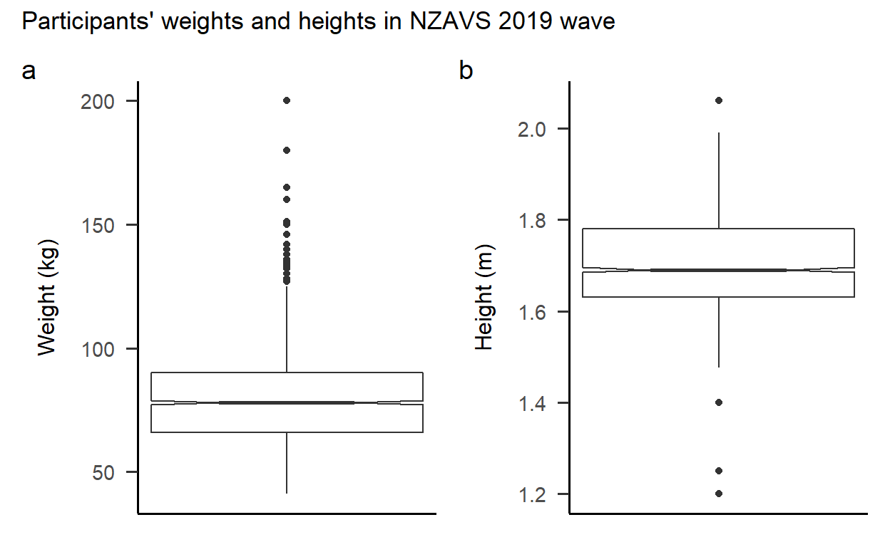
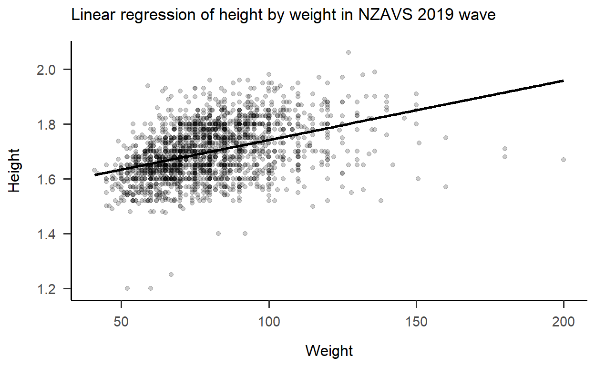
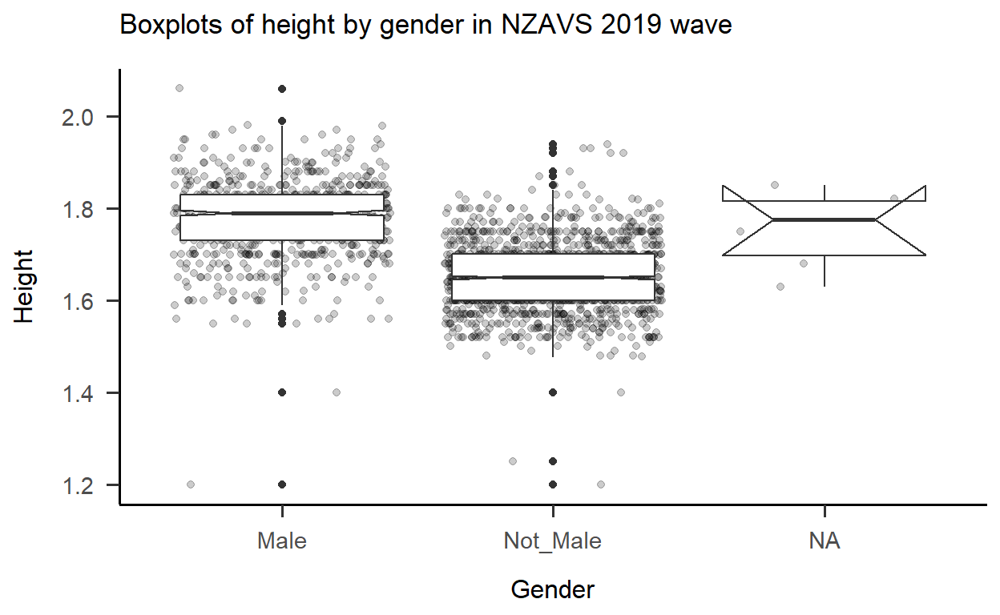
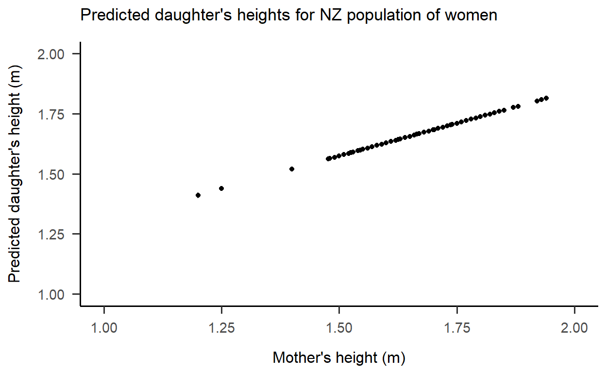

Linear models
#Read data
nz <- readr::read_delim(url("https://raw.githubusercontent.com/go-bayes/psych-447/main/data/nz/nz.csv"),
delim = ";",
locale=locale(decimal_mark = ","),
col_types = cols())
#Re-level Kessler 6 variables and filter dataset by 2019 survey wave
f<-c("None Of The Time",
"A Little Of The Time",
"Some Of The Time",
"Most Of The Time",
"All Of The Time")
nz_1 <- nz %>%
dplyr::mutate_if(is.character, factor) %>%
select(
-c(
SWB.Kessler01,
SWB.Kessler02,
SWB.Kessler03,
SWB.Kessler04,
SWB.Kessler05,
SWB.Kessler06
)
) %>%
dplyr::mutate(Wave = as.factor(Wave)) %>%
mutate(FeelHopeless = forcats::fct_relevel(FeelHopeless, f)) %>%
mutate(FeelDepressed = forcats::fct_relevel(FeelDepressed, f)) %>%
mutate(FeelRestless = forcats::fct_relevel(FeelRestless, f)) %>%
mutate(EverythingIsEffort = forcats::fct_relevel(EverythingIsEffort, f)) %>%
mutate(FeelWorthless = forcats::fct_relevel(FeelWorthless, f)) %>%
mutate(FeelNervous = forcats::fct_relevel(FeelNervous, f)) %>%
dplyr::mutate(Wave = as.factor(Wave)) %>%
dplyr::mutate(male_id = as.factor(Male)) %>%
dplyr::mutate(date = make_date(year = 2009, month = 6, day = 30) + TSCORE) %>%
filter(Wave=="2019")
#Read data
md_df <- data.frame(read.table(url("https://raw.githubusercontent.com/avehtari/ROS-Examples/master/PearsonLee/data/MotherDaughterHeights.txt"),
header=TRUE))
#Centre mother_height; convert daughter_height and mother_height to metres
md_df <- md_df %>%
dplyr::mutate(mother_height_c = as.numeric(scale(mother_height, center = TRUE, scale = FALSE))) %>%
dplyr::mutate(daughter_height = conv_unit(daughter_height, "inch", "m")) %>%
dplyr::mutate(mother_height = conv_unit(mother_height, "inch", "m"))
#Present means and standard deviations for weight and height in a table
stats1 <- nz_1 %>%
select(HLTH.Weight, HLTH.Height, male_id) %>%
filter(!is.na(male_id)) %>%
summarise(
"male_id" = as.factor("Total"),
"m.w" = round(mean(HLTH.Weight, na.rm = TRUE), digits = 1),
"sd.w" = round(sd(HLTH.Weight, na.rm = TRUE), digits = 1),
"m.h" = round(mean(HLTH.Height, na.rm = TRUE), digits = 2),
"sd.h" = round(sd(HLTH.Height, na.rm = TRUE), digits = 2),
"n" = n()
)
stats2 <- nz_1 %>%
select(HLTH.Weight, HLTH.Height, male_id) %>%
filter(!is.na(male_id)) %>%
group_by(male_id) %>%
summarise(
"m.w" = round(mean(HLTH.Weight, na.rm = TRUE), digits = 1),
"sd.w" = round(sd(HLTH.Weight, na.rm = TRUE), digits = 1),
"m.h" = round(mean(HLTH.Height, na.rm = TRUE), digits = 2),
"sd.h" = round(sd(HLTH.Height, na.rm = TRUE), digits = 2),
"n" = n()
)
stats3 <- rbind(stats1, stats2)
tab1 <- stats3 %>%
kbl(caption = "Participants' weights and heights by gender in NZAVS 2019 wave",
col.names = c("Gender",
"Weight (M)",
"Weight (SD)",
"Height (M)",
"Height (SD)",
"n"),
align = c("r", "r", "r", "r")
) %>%
kable_classic_2(c("striped", "hover"), full_width = TRUE)
tab1
| Gender | Weight (M) | Weight (SD) | Height (M) | Height (SD) | n |
|---|---|---|---|---|---|
| Total | 79.7 | 18.8 | 1.70 | 0.10 | 2057 |
| Male | 88.2 | 17.1 | 1.78 | 0.08 | 752 |
| Not_Male | 74.7 | 18.0 | 1.65 | 0.07 | 1305 |
#Generate notched boxplots of weight and height
plot1 <- ggplot(nz_1, aes(y = HLTH.Weight)) +
geom_boxplot(notch = TRUE, na.rm = TRUE) +
theme_apa() +
theme(axis.text.x = element_blank(),
axis.ticks.x = element_blank()
) +
ylab("Weight (kg)")
plot2 <- ggplot(nz_1, aes(y = HLTH.Height)) +
geom_boxplot(notch = TRUE, na.rm = TRUE) +
theme_apa() +
theme(axis.text.x = element_blank(),
axis.ticks.x = element_blank()
) +
ylab("Height (m)")
#Combine boxplots into one figure
plot1 + plot2 +
plot_annotation(title = "Participants' weights and heights in NZAVS 2019 wave",
tag_levels = 'a')

The mean weight of participants was 79.7 kilograms (SD = 18.8). Males were heavier than average (M = 88.2, SD = 17.1) while non-males were lighter than average (M = 74.7, SD = 18).
The mean height of participants was 1.7 metres (SD = 0.1). Males were taller than average (M = 1.78, SD = 0.08) while non-males were lighter than average (M = 1.65, SD = 0.07).
#Run linear model of height by weight in the NZAVS dataset
mod1 <- lm(HLTH.Height ~ HLTH.Weight, data = nz_1)
p1 <- scales::pvalue((tidy(mod1)$p.value[2]))
rs1 <- round(summary(mod1)$r.squared, 3)
#Present results in a table
tab3 <- mod1 %>%
tidy() %>%
mutate(p.value = scales::pvalue(p.value),
term = c("Intercept", "Weight")
) %>%
kbl(caption = "Linear regression of height by weight in NZAVS 2019 wave",
col.names = c("Predictor", "B", "SE", "t", "p"),
digits = c(0, 3, 3, 2, 3),
align = c("l", "r", "r", "r", "r")
) %>%
footnote(
general = c("R$^2$ = ", round(summary(mod1)$r.squared, 3)),
general_title = "Note.",
footnote_as_chunk = TRUE,
escape = FALSE
) %>%
kable_classic_2(c("striped", "hover"), full_width = TRUE)
tab3
| Predictor | B | SE | t | p |
|---|---|---|---|---|
| Intercept | 1.525 | 0.009 | 175.01 | <0.001 |
| Weight | 0.002 | 0.000 | 20.32 | <0.001 |
| Note. R\(^2\) = 0.169 |
#Graph results
plot3 <- ggplot(data = nz_1, aes(y = HLTH.Height, x = HLTH.Weight)) +
geom_jitter(alpha = .2, na.rm = TRUE) +
geom_smooth(method = "lm", se = FALSE, col = "black", na.rm = TRUE) +
labs(title = "Linear regression of height by weight in NZAVS 2019 wave") +
ylab("Height") +
xlab("Weight") +
theme_apa()
plot3

The null hypothesis that there is no relationship between height and weight is rejected at the 5% significance level (p <0.001). There is strong evidence to suggest that there is a linear relationship between height and weight, with the fitted regression line \[ \operatorname{\widehat{HLTH.Height}} = 1.525 + 0.002(\operatorname{HLTH.Weight}) \]
Weight is therefore a useful linear predictor of height, explaining 16.9% (R\(^2\) = 0.169) of the variance in the model. The scatterplot with fitted regression line shows that height increases as weight increases, suggesting that physiological development of these factors occurs in tandem.
#Run linear model of height by gender in the NZAVS dataset
mod2 <- lm(HLTH.Height ~ male_id, data = nz_1)
p2 <- scales::pvalue((tidy(mod2)$p.value[2]))
rs2 <- round(summary(mod2)$r.squared, 3)
#Present results in a table
tab4 <- mod2 %>%
tidy() %>%
mutate(p.value = scales::pvalue(p.value),
term = c("Intercept", "Gender (not male)")
) %>%
kbl(caption = "Linear regression of height by gender in NZAVS 2019 wave",
col.names = c("Predictor", "B", "SE", "t", "p"),
digits = c(0, 2, 3, 2, 3),
align = c("l", "r", "r", "r", "r")
) %>%
footnote(
general = c("R$^2$ = ", round(summary(mod2)$r.squared, 3)),
general_title = "Note.",
footnote_as_chunk = TRUE,
escape = FALSE
) %>%
kable_classic_2(c("striped", "hover"), full_width = TRUE)
tab4
| Predictor | B | SE | t | p |
|---|---|---|---|---|
| Intercept | 1.78 | 0.003 | 628.10 | <0.001 |
| Gender (not male) | -0.13 | 0.004 | -35.56 | <0.001 |
| Note. R\(^2\) = 0.384 |
#Graph results
plot4 <- ggplot(data = nz_1, aes(y = HLTH.Height, x = male_id)) +
geom_jitter(alpha = .2, na.rm = TRUE) +
geom_boxplot(notch = TRUE, na.rm = TRUE) +
labs(title = "Boxplots of height by gender in NZAVS 2019 wave") +
ylab("Height") +
xlab("Gender") +
theme_apa()
plot4

The null hypothesis that there is no relationship between height and gender is rejected at the 5% significance level (p <0.001). There is strong evidence to suggest that there is a linear relationship between height and gender, with the fitted regression line \[ \operatorname{\widehat{HLTH.Height}} = 1.525 + 0.002(\operatorname{HLTH.Weight}) \]
Gender is therefore a useful linear predictor of height, explaining 38.4% (R\(^2\) = 0.384) of the variance in the model. The boxplots show that heights are taller for males relative to non-males, suggesting that physiological development is sexually dimorphic.
#Filter NZAVS dataset by women and rename HLTH.Height to mother_height
nz_2 <- nz_1 %>%
filter(male_id=="Not_Male") %>%
select(HLTH.Height) %>%
dplyr::rename(mother_height = HLTH.Height)
#Run linear model of Pearson and Lee (1903) dataset
mod3 <- lm(daughter_height ~ mother_height, data = md_df)
#Predict daughter_height of NZAVS dataset using linear model
pred1 <- predict(mod3, type = "response", interval = "confidence", newdata = nz_2)
#Create dataframe of actual heights and predicted daughter heights
nz_3 <- data.frame(nz_2, pred1)
#Graph the predicted results
plot5 <- ggplot(data = nz_3,
aes(x = mother_height, y = fit)) +
geom_point(na.rm = TRUE) +
geom_errorbar(aes(ymin = lwr, ymax = upr)) +
expand_limits(x = c(1,2), y = c(1,2)) +
theme_apa() +
labs(title = "Predicted daughter's heights for NZ population of women") +
ylab("Predicted daughter's height (m)") +
xlab("Mother's height (m)")
plot5

#Create year variable in NZAVS dataset
nz_4 <- nz_2 %>%
dplyr::mutate(year = "2019") %>%
dplyr::mutate(year = as.factor(year))
#Create year variable in Pearson and Lee's dataset
md_1 <- md_df %>%
select(mother_height) %>%
dplyr::mutate(year = "1903") %>%
dplyr::mutate(year = as.factor(year))
#Combine datasets into a single dataframe
compare_heights <- rbind(md_1, nz_4)
#Calculate mean and standard deviation for women's height across years and present in table
stats4 <- compare_heights %>%
group_by(year) %>%
summarise(
"m.h" = round(mean(mother_height, na.rm = TRUE), digits = 2),
"sd.h" = round(sd(mother_height, na.rm = TRUE), digits = 2),
"n" = n()
)
tab5 <- stats4 %>%
kbl(caption = "Women's heights in Pearson and Lee's (1903) and NZAVS (2019) datasets",
col.names = c("Year",
"Height (M)",
"Height (SD)",
"n"),
align = c("l", "r", "r", "r")
) %>%
kable_classic_2(c("striped", "hover"), full_width = TRUE)
tab5
| Year | Height (M) | Height (SD) | n |
|---|---|---|---|
| 1903 | 1.59 | 0.06 | 5524 |
| 2019 | 1.65 | 0.07 | 1305 |
#Graph results
plot6 <- ggplot(data = compare_heights, aes(y = mother_height, x = year)) +
geom_jitter(alpha = .2, na.rm = TRUE) +
geom_boxplot(notch = TRUE, na.rm = TRUE) +
labs(title = "Boxplots of women's heights by year") +
ylab("Height") +
xlab("Year") +
theme_apa()
plot6
#Check equality of variances
test1 <- leveneTest(mother_height ~ year, data = compare_heights)
test1
Levene's Test for Homogeneity of Variance (center = median)
Df F value Pr(>F)
group 1 53.911 2.341e-13 ***
6810
---
Signif. codes: 0 '***' 0.001 '**' 0.01 '*' 0.05 '.' 0.1 ' ' 1#Perform two sample t-test
test2 <- t.test(mother_height ~ year, data = compare_heights, var.equal = TRUE)
test2
Two Sample t-test
data: mother_height by year
t = -32.3, df = 6810, p-value < 2.2e-16
alternative hypothesis: true difference in means is not equal to 0
95 percent confidence interval:
-0.06767758 -0.05993276
sample estimates:
mean in group 1903 mean in group 2019
1.587468 1.651273 #Calculate Cohen's d
test3 <- cohen.d(mother_height ~ year, data = compare_heights, pooled = TRUE)
test3
Cohen's d
d estimate: -0.9994302 (large)
95 percent confidence interval:
lower upper
-1.062366 -0.936494 There seems to be a difference in samples when comparing means and standard deviations for women’s heights in the 1903 and 2019 datasets. Visual inspection of boxplots support this exploratory hypothesis with women on average appearing shorter in 1903 than in 2019.
To test this hypothesis, we must first determine whether the sample variances are equal. Levene’s test was not statistically significant (p <0.001) suggesting equal variances.
The null hypothesis that there is no difference between sample heights is rejected at the 5% significance level (t = -32.3, p <0.001, d = -1). There is strong evidence to suggest that there is a difference in heights across sample years, with women in 1903 (M = 1.59, SD = 0.06) shorter on average than their modern counterparts (M = 1.65, SD = 0.07) by roughly 6 cm.